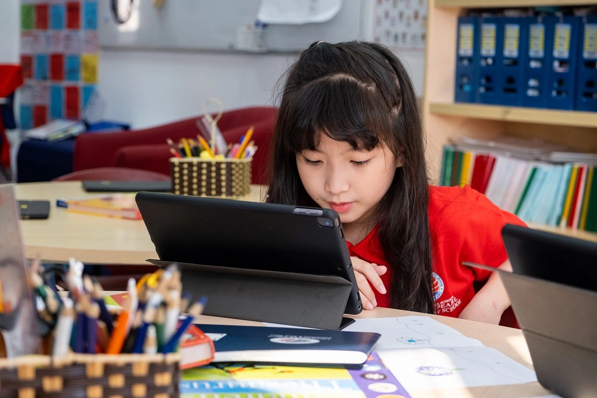

Outstanding Learning
All elementary students will take the Measure of Learning Progress test to measure their growth and progress throughout the school year and year-over-year.students achieve global excellence in Mathematics during the school year. test . These tests allow schools to understand each child's strengths and needs, so that individualized learning plans can be devised
English Program
Primary School : taught under Reflex Method. The Reflex Method, which has been widely used in more than 20 years, is designed to scientifically coordinate different elements (sounds, images, movements, etc.) i. While introducing elementary students to the four skills of language learning, this methodology helps them build the strongest foundations in speaking and listening from the very first sentences.
The Science and Math Program : Taught in English, the Science and Math Program at primary levels helps introduce Math and Science basic concepts while continuing to build the foundation for English learning. TIS uses internationally proven textbooks by well-established publishers with a platform designed for teachers to cater to each and every Young Learner of English.
Outstanding Sports
Schools recognize the importance of children participating in sports and regular physical activity, not only for improving strength and fitness, but also for the positive effects of sport on increasing self-esteem. children's self-esteem, mood, and concentration.
Students who show a passion for sports and a desire to expand their athletic abilities can compete in the school's swimming, soccer and basketball teams with elementary sports teams from international schools. other across the city. Sports teach children about teamwork, risk taking, leadership, integrity and perseverance, important qualities that will stay with them for the rest of their lives.
Elementary students participate in the school's extensive swimming program, where coaches teach children mastery of swimming strokes and build their strength and stamina to swim with ease. easily and efficiently over longer distances.
Communication and information technology

Information & Communication Technology : is an integral part of everyday life, it is believed that children should be confident in the use of technology and use them purposefully and responsibly from an early age. small. In the school's technology classroom, students develop fundamental digital literacy skills and learn to use technology as a tool to promote and access communication, information and creativity. The school's information technology program also includes a fun, interactive iPad program where children develop creative thinking skills in solving problems with technology.
Discover your talents and enhance your creative, cultural and sporting capabilities with like-minded students.The relationships and friendships forged through extracurricular activities at school are the foundation for building a close-knit community and a rich school culture.